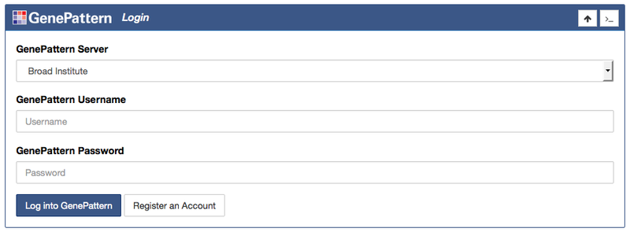

GenePattern Notebook for Jupyter Users
1. GenePattern Notebook Extension
GenePattern Notebook is an extension for Jupyter. It provides a variety of tools for interacting with the powerful GenePattern platform from within a Jupyter Notebook environment. These tools include:
- Visual widgets for running bioinformatic analyses and submitting these analyses to a GenePattern server.
- Tools for visually sending results to downstream steps in a bioinformatic workflow.
- A WYSIWYG rich text editor for Markdown cells.
- Jupyter magics for creating GenePattern widgets.
- A Python library for programmatically working with the results of the analyses.
To use the GenePattern Notebook extension, you will need to register for an account. GenePattern usage is free and the software is open source under a BSD-style license.
2. What is GenePattern?
GenePattern is a powerful platform for reproducible bioinformatic research. It provides hundreds of analytical tools for the analysis of gene expression (RNA-seq and microarray), sequence variation and copy number, proteomic, flow cytometry, and network analysis.
For more information visit our main GenePattern page. For introductory information about GenePattern, please see our 10-minute tutorial and/or check out one of our video tutorials.
3. GenePattern Cells
GenePattern cells are Python code cells which are automatically executed, and which display a visual widget for submitting GenePattern analyses or working with the results of these analyses. These cells are displayed as a new cell type, and can be added either through the Jupyter menu or through the GenePattern Notebook search functionality.

GenePattern cells come in three types: authentication, analysis cells and UI Builder cells.
A. Authentication cells are used to authenticate the notebook user with a GenePattern server. One of these cells must be added to a notebook before Analysis cells becomes available. If a GenePattern cell is added to a notebook before authentication has happened, it will automatically become one of these cells.

B. Analysis cells each represent a particular type of analysis on the GenePattern platform. Hundreds of diferent analyses are available. These cells will present a form to the user, accepting data or other parameters. Once one of these forms has been filled out, the user can then run the analysis by clicking the Run button. This will submit the analysis to the GenePattern server and display the results.

C. UI Builder cells are a way to display any Python function or method call as an interactive widget. This will render the parameters of the function as a web form. The UI Builder will use any existing docstring for the function as a description, will infer parameter types from default values and will display parameter annotations as helpful text near each input.

Since GenePattern cells are also Python code cells, all changes to the information in these widgets is reflected in the code and will be saved in the notebook's ipynb file. Similarly, sending one of these notebook files to a user without the GenePattern Notebook extension installed, will result in a complete notebook, albeit one where the cells with visual widgets are instead displayed as code.
To view the code backing a GenePattern cell, simply click the "Gear" button found on a GenePattern widget in the upper right corner and select "Toggle Code."
4. UI Builder
The UI Builder is a way to display any Python function or method call as an interactive widget. This will render the parameters of the function as a web form which can be filled out with numbers, string literals or with references to existing Python variables. Clicking the Run button on the widget will validate the form and execute the function using the supplied values.
The UI Builder will use any existing docstring for the function as a description in the widget, will infer parameter types from default values and will display parameter annotations as helpful text near each input.
To use render a function, simply import the UIBuilder class from the nbtools package and pass the function to its constructor.
For more information see the Programmatic Features page

5. GenePattern Python Library
Programmatic access to all GenePattern jobs and results is also automatically available using GenePattern's Python library. Any job executed in a notebook can afterward be referenced using job followed by the job number. For example, if a job is number 1170434,
the variable name would be job1170434. Entering this into a code cell will return a reference to a GPJob object.
- For more information on using the GenePattern Python library, see the GenePattern Programmer's Guide.
- A notebook providing a tutorial for using the GenePattern Python Library is also available.
Code examples of how to reference GenePattern jobs or GenePattern result files are available in the notebook by clicking a job result and selecting "Send to Code" in the menu.

GPJob objects can also be programmatically created and executed without the need for a GenePattern cell or widget. For information on how to do this see the GenePattern Programmer's Guide or the GenePattern Python Tutorial notebook.
Python Packages
The GenePattern Notebook Repository comes with a wide selection of Python packages installed in the base environment. Users can also supplement this list by installing their own packages. The base environment includes:
| anndata | argcomplete | asnrypto | attrs | Babel |
| backcall | beautifulsoup | biopython | bleach | bokeh |
| boto | botocore | cachetools | ccalnoir | certifi |
| cffi | chardet | cloudpickle | CommonMark | crc32c |
| crcmod | cryptography | cuzcatlan | cycler | cyjupyter |
| Cython | cytoolz | dask | dcplib | decorator |
| defusedxml | dill | docutils | entrypoints | enum34 |
| fastcache | future | genefab | genepattern-notebook | genepattern-python |
| gmpy2 | google-auth | google-auth-oauthlib | h5py | hca |
| humanfriendly | idna | igv-jupyter | ijson | imageio |
| ipykernel | ipython | ipython-genutils | ipywidgets | jedi |
| Jinja2 | jmespath4 | joblib | jsonpointer | jsonschema |
| jupyter | jupyter-client | jupyter-console | jupyter-core | jupyter-wysiwyg |
| kiwisolver | llvmlite | louvain | MarkupSafe | matplotlib |
| memory-profiler | mistune | mock | mpmath | natsort |
| nbconvert | nbformat | nbtools | ndex2 | networkx |
| notebook | numba | numexpr | numpy | oauthlib1 |
| olefile | opencv-python | packaging | pandas | pandocfilters |
| parso | patsy | pexpect | pickleshare | Pillow |
| plotly | prometheus-client | prompt-toolkit | protobuf | psutil2 |
| ptyprocess | puremagic | py2cytoscape | pyasn5 | pyasnmodules |
| pycairo | pycparser | pydot1 | pydotplus | Pygments |
| PyJWT1 | pyparsing | pyrsistent | pysam | pysolr |
| python-dateutil | python-igraphpost | pytz | PyWavelets | PyYAML |
| pyzmq | qtconsole | requests | requests-oauthlib | requests-toolbelt |
| rpy2 | rsa | s3transfer | scanpy | scikit-image |
| scikit-learn | scipy | seaborn | Send2Trash | simplegeneric |
| six | soupsieve | SQLAlchemy | statsmodels | sympy |
| tables | tenacity | terminado | testpath | toolz |
| tornado | tqdm | traitlets | tweak | tzlocal |
| umap-learn | urllib | validators | vincent | wcwidth |
| webencodings | widgetsnbextension | xlrd |